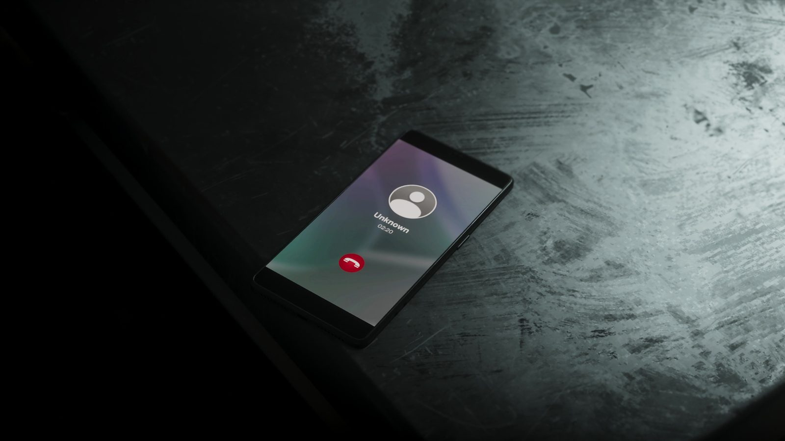

Сливы GTA 6 летом 2026: что говорят игроки об истории CyberLeek
Обновлено:
- С 18 августа 2026 года аноним CyberLeek выкладывал ролики из рабочей сборки GTA 6.
- Он требовал запретить цифровые предзаказы и при этом продавал криптотокен.
- 20 августа Take-Two через суд Нью-Йорка потребовала данные у Microsoft и Discord.
- Rockstar: для команды это «было тяжело». Ссылок на сливы у нас нет и не будет.
Что произошло
18 августа 2026 года, за девять дней до премьеры «Расширенного показа» на Netflix, в сети появились первые ролики из GTA 6. Их выкладывал аноним под именем CyberLeek. Для доказательства, что сборка у него в руках, он автоматными очередями вывел на стене слово «LEEK». По подсчёту Fandom Pulse, за восемь дней вышло 14 роликов. Домен сайта сливщика, по данным того же издания, зарегистрировали 14 августа, то есть всё готовили заранее.
Мы не пересказываем, что было в роликах. Официальный показ через девять дней сделал большую часть сливов неактуальной, а на сюжетные детали лучше посмотреть самому 19 ноября.
Манифест про диски
Необычно было то, что сливщик называл себя борцом за права покупателей. В его «заповедях» были пункты «Не продавай цифровые предзаказы» и «Сохраняй одиночный контент». Логика такая: цифровая копия не может закончиться, значит, предзаказ нужен только издателю. GTA 6 выходит без диска, в коробке лежит только код (Издания и цены GTA 6: Standard и Ultimate).
«Дело не в самих дисках. Дело во владении. Право перепродажи важно даже в цифровую эпоху».
CyberLeek (по Kotaku, 25.08.2026)
Требования были красивые, а поступки нет. Сливщик выпустил криптотокен $CYBERLEEK, ставил на ролики водяные знаки со ссылкой на торговую страницу, продавал голосования за следующий ролик и предлагал «заказать» съёмку за 400 Monero (около $160 тыс.).
Ответ Take-Two и Rockstar
20 августа юристы Take-Two подали в федеральный суд Южного округа Нью-Йорка запросы к Microsoft и Discord. По данным Tom’s Hardware, у Microsoft просили идентификаторы Windows-устройств, IP-адреса, телефоны и связанные аккаунты участников трёх Discord-серверов. Срок ответа был 4 сентября.
26 августа Rockstar впервые высказалась публично:
«Сказать, что утечка геймплея в таком виде стала для нашей команды тяжёлым ударом, — ничего не сказать. Надеемся, что все подождут ещё немного и сами увидят игру 19 ноября».
Rockstar Games, 26.08.2026 (по GameSpot)

Что говорят игроки
Мнения разделились, и это видно по реакциям заметных людей:
- Stop Killing Games, движение за право игроков сохранять купленные игры, от сливщика отмежевалось, хотя требования у них похожи: «Добиваться своего незаконными методами для нас неприемлемо».
- Мэттью «DarkViperAU» Джадж, известный стример GTA 5, обнаружил в судебных запросах сервер со своим именем: «Я ничего не знаю. Это не Discord моих монтажёров».
- Kotaku отмечал, что большая часть фанатов относилась к сливам терпимо, но настроение может резко измениться, если начнутся сюжетные спойлеры. Их сливщик как раз обещал, с формулировкой «Нет дисков — будет больше утечек».
Это вторая большая утечка GTA 6. Первая случилась в сентябре 2022 года, когда в сеть попали десятки роликов из ранней сборки. Тогда Rockstar подтвердила взлом и сказала, что это не повлияет на разработку. Разница показательна: в 2022 году сливы показывали недоделанную игру, а в 2026-м — почти готовую, за три месяца до релиза.
Что это значит для вас
- Не качайте «слитые сборки». Сам сливщик предупреждал о поддельных «GTA 6» на 113 ГБ с вредоносными программами. Игры до 19 ноября ни у кого нет, а вирус у вас будет настоящий.
- Берегитесь спойлеров. Добавьте в скрытые слова в соцсетях «GTA 6 leak», «слив GTA 6», «CyberLeek».
- Смотрите официальное. Всё, что Rockstar показала сама, собрано в «Расширенный показ» GTA 6: что показали за 26 минут — с таймкодами.
А вы досматривали сливы или ждёте релиза вслепую? Официальные цифры о длине игры — Слух: сюжет GTA 6 — 80 часов, а карта втрое больше RDR2.
Источники: GameSpot (хронология утечек); Kotaku (21.08 и 25.08.2026); Tom’s Hardware (судебные запросы, 20.08.2026); Fandom Pulse (токен, 14 роликов); Variety (2022).